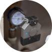
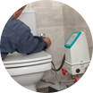

Як здійснюється повірка
Ми проводимо повірку без демонтажу лічильника та
без порушення
пломб
надавача послуг та виробника
лічильника
-

Встановлюємо камеру на
лічильник води -

Підключаємо проливну
установку до
трубопроводу -
Проводимо вимірювання
лічильника води -
Оформляємо акт
виконаних робіт
25 хвилин
потрібно на проведення
процедури повірки на місці
Повірка лічильників без демонтажу може проводитись лише при централізованій подачі води та на справному сантехнічному обладнанні.
Повірений лічильний — ваша економія
Кожен прилад обліку має певний період служби після закінчення якого потрібно
здійснювати його повірку на предмет відповідності даних вимірювань. У лічильників води цей
період
становить 4
роки.
Якщо у лічильника закінчився міжповірочний інтервал то його обов’язково повірити.
В іншому випадку водоканал буде рахувати споживання води за норми споживання, а не за
показниками лічильника.
З повіреним лічильником ви платите лише за використану воду.
4 роки
міжповірочний
інтервал для
лічильників води
Повірка лічильників води є обов'язковою згідно ст. 17 Закону України
«Про метрнологію та метрологічну діяльність»
Зробити повірку просто!
-
1
-
2
Дочекайтеся майстра
Майстер приїзджає на місце замовлення
з сертифікованою проливною
установкою і проводить вимірювання -
3
Оплатіть
Після повірки майстер випише акт виконаних
робіт та видасть квитанцію на оплату -
4
Отримайте свідоцтво
Свідоцтво по проходження повірки буде
готове через 10-12 днів
З нами надійно
Ми надаємо послуги враховуючи нові тенденції ринку та потреби
наших
споживачів.
Прилади, які ми реалізуємо і технології, які використовуємо
відповідають європейським
стандартам
обслуговування та
ефективно вирішують завдання клієнтів.
- У нас використовується лише
сертифіковане обладнання - Роботи проводять лише кваліфіковані
спеціалісти з відповідною освітою - Підприємство «Смарт Еко
Лоджик» отримало міжнародну
сертифікацію «ISO 10012» - Інформація про повірку автоматично
передається надавачу послуг в
зашифрованому вигляді
Вартість послуг
-
Для населення
250 грн
при повірці від двох
лічильників -
Для ОСББ
230 грн
при повірці від 4-х
лічильників -
Для юридичних осіб
300 грн
за один лічильник
Часті запитання-відповіді
-
Хто має право повіряти лічильники?
Право повірки мають підприємства, які пройшли сертифікацію та мають відповідне обладнання для здійснення повірки.
-
Чи потрібно знімати лічильник для повірки?
Право повірки мають підприємства, які пройшли сертифікацію та мають відповідне обладнання для здійснення повірки.
- Чому потрібно повіряти лічильник?
- Як робиться повірка лічильників води?
- Як здійснюється оплата за повірку лічильника?
- У яких випадках повірка лічильника на місці не можлива?
- У яких випадках лічильник не повіряється і підлягає заміні?